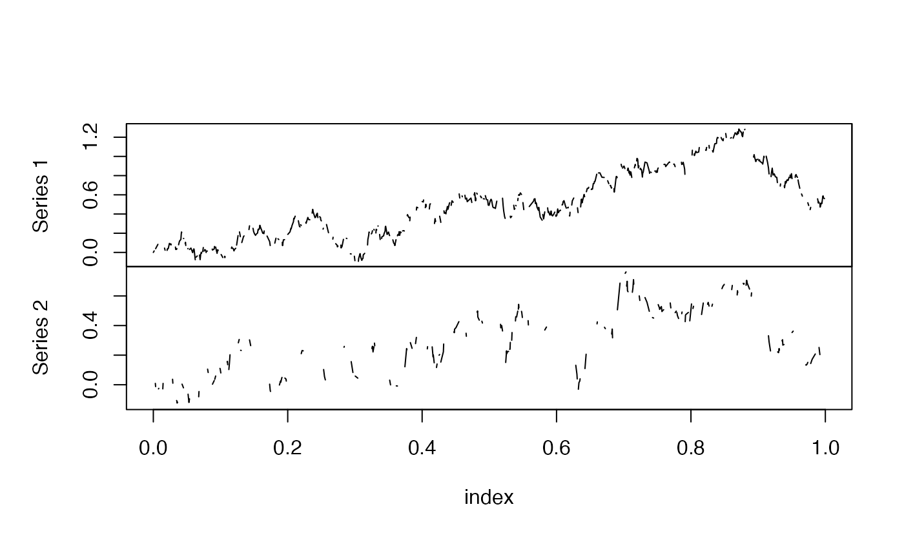
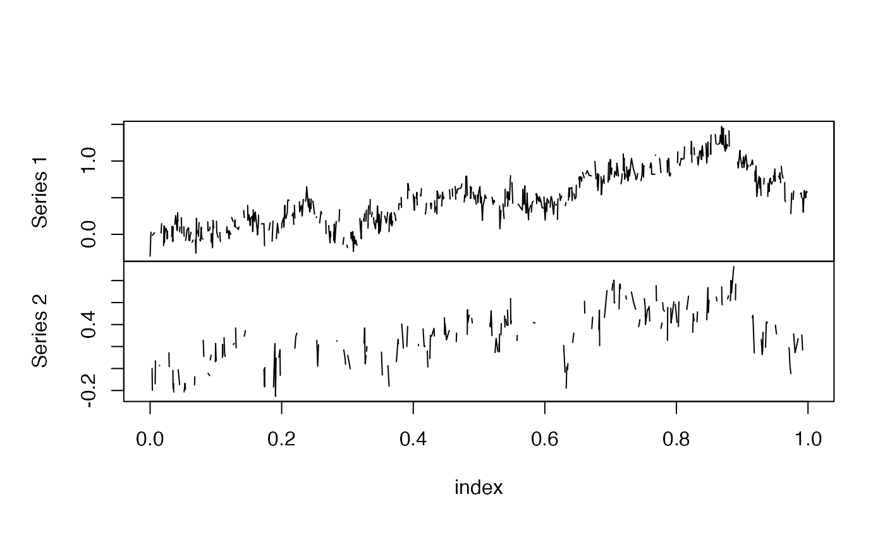
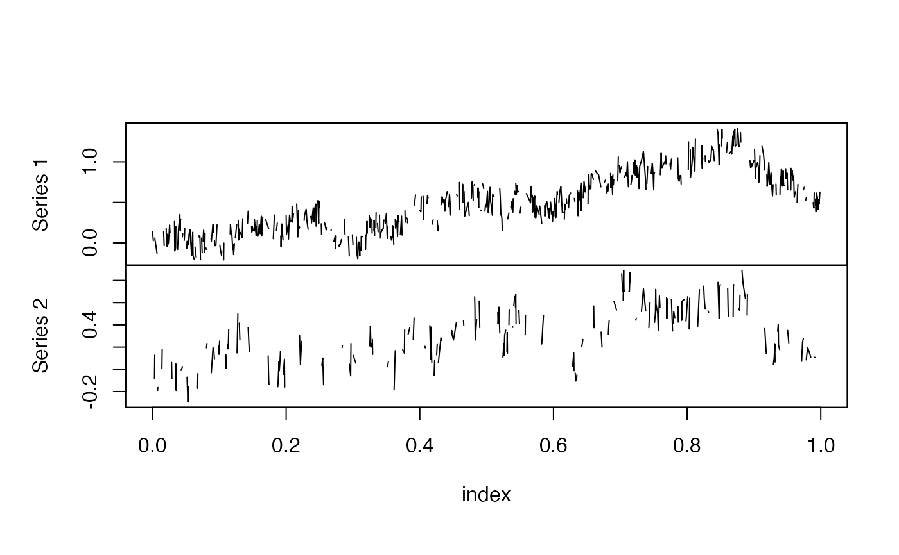
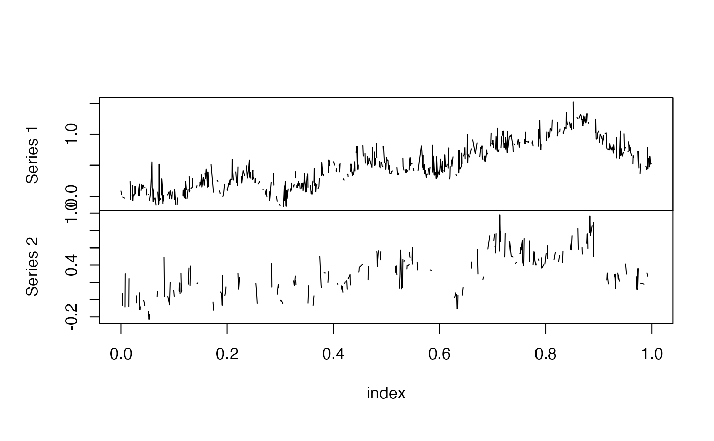
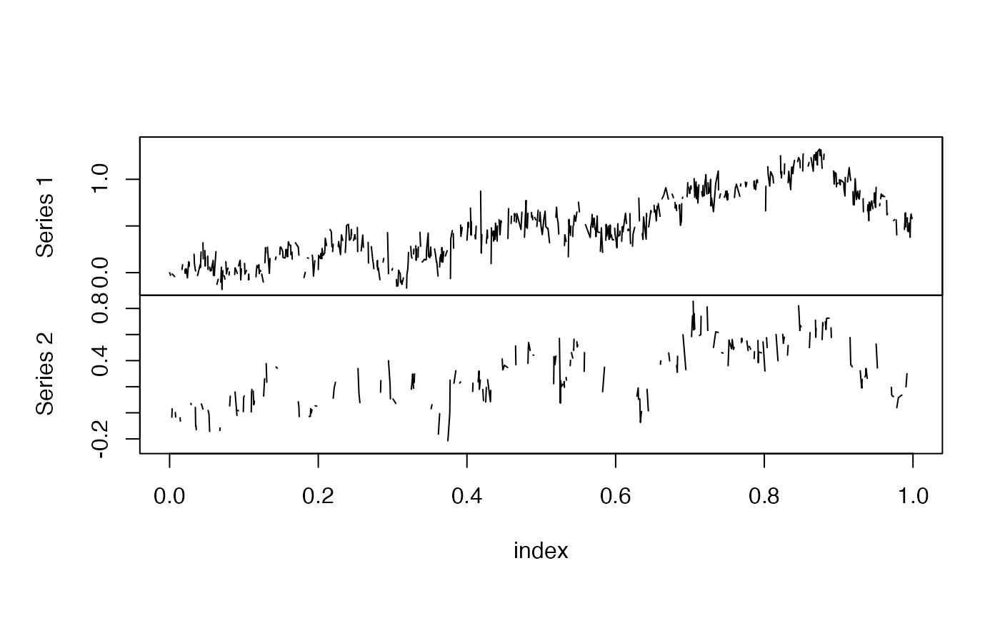
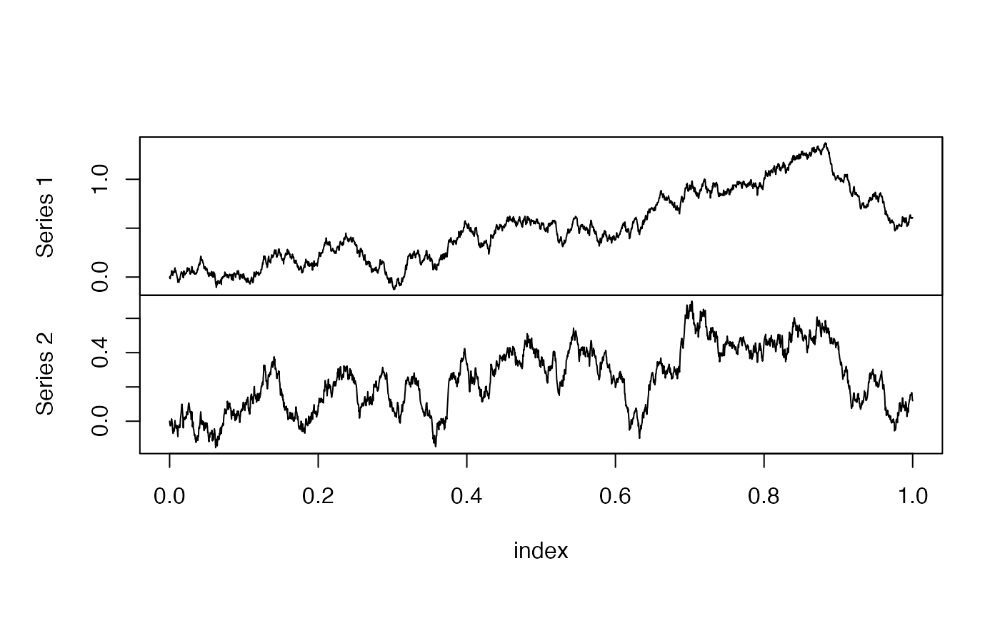
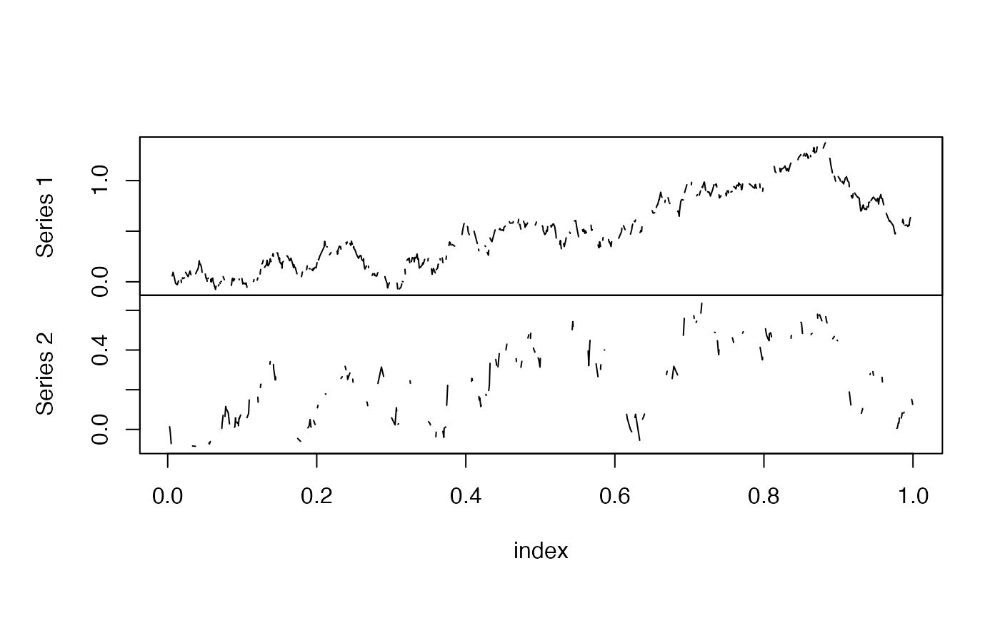

noisy.sampling.RdGenerates a new observation data contaminated by noise.
noisy.sampling(x, var.adj = 0, rng = "rnorm", mean.adj = 0, ...,
end.coef = 0, n, order.adj = 0, znoise)
an object of yuima-class or yuima.data-class.
a matrix or list to be used for adjusting the variance matrix of the exogenous noise.
a function to be used for generating the random numbers for the exogenous noise.
a numeric vector to be used for adjusting the mean vector of the exogenous noise.
passed to rng.
a numeric vector or list to be used for adjusting the variance of the endogenous noise.
a numeric vector to be used for adjusting the scale of the endogenous noise.
a positive number to be used for adjusting the order of the noise.
a list indicating other sources of noise processes. The default value is as.list(double(dim(x))).
This function simulates microstructure noise and adds it to the path of x. Currently, this function can deal with Kalnina and Linton (2011) type microstructure noise. See 'Examples' below for more details.
an object of yuima.data-class.
Kalnina, I. and Linton, O. (2011) Estimating quadratic variation consistently in the presence of endogenous and diurnal measurement error, Journal of Econometrics, 147, 47–59.
## Set a model (a two-dimensional normal model sampled by a Poisson random sampling)
set.seed(123)
drift <- c(0,0)
sigma1 <- 1
sigma2 <- 1
rho <- 0.7
diffusion <- matrix(c(sigma1,sigma2*rho,0,sigma2*sqrt(1-rho^2)),2,2)
model <- setModel(drift=drift,diffusion=diffusion,
state.variable=c("x1","x2"),solve.variable=c("x1","x2"))
yuima.samp <- setSampling(Terminal = 1, n = 2340)
#> Warning:
#> YUIMA: 'delta' (re)defined.
yuima <- setYuima(model = model, sampling = yuima.samp)
yuima <- simulate(yuima)
## Poisson random sampling
psample<- poisson.random.sampling(yuima, rate = c(1/3,1/6), n = 2340)
## Plot the path without noise
plot(psample)

# Set a matrix as the variance of noise
Omega <- 0.01*diffusion %*% t(diffusion)
## Contaminate the observation data by centered normal distributed noise
## with the variance matrix equal to 1% of the diffusion
noisy.psample1 <- noisy.sampling(psample,var.adj=Omega)
plot(noisy.psample1)

## Contaminate the observation data by centered uniformly distributed noise
## with the variance matrix equal to 1% of the diffusion
noisy.psample2 <- noisy.sampling(psample,var.adj=Omega,rng="runif",min=-sqrt(3),max=sqrt(3))
plot(noisy.psample2)

## Contaminate the observation data by centered exponentially distributed noise
## with the variance matrix equal to 1% of the diffusion
noisy.psample3 <- noisy.sampling(psample,var.adj=Omega,rng="rexp",rate=1,mean.adj=1)
plot(noisy.psample3)

## Contaminate the observation data by its return series
## multiplied by -0.1 times the square root of the intensity vector
## of the Poisson random sampling
noisy.psample4 <- noisy.sampling(psample,end.coef=-0.1,n=2340*c(1/3,1/6))
plot(noisy.psample4)

## An application:
## Adding a compound Poisson jumps to the observation data
## Set a compound Poisson process
intensity <- 5
j.num <- rpois(1,intensity) # Set a number of jumps
j.idx <- unique(ceiling(2340*runif(j.num))) # Set time indices of jumps
jump <- matrix(0,2,2341)
jump[,j.idx+1] <- sqrt(0.25/intensity)*diffusion %*% matrix(rnorm(length(j.idx)),2,length(j.idx))
grid <- seq(0,1,by=1/2340)
CPprocess <- list(zoo(cumsum(jump[1,]),grid),zoo(cumsum(jump[2,]),grid))
## Adding the jumps
yuima.jump <- noisy.sampling(yuima,znoise=CPprocess)
plot(yuima.jump)

## Poisson random sampling
psample.jump <- poisson.random.sampling(yuima.jump, rate = c(1/3,1/6), n = 2340)
plot(psample.jump)
